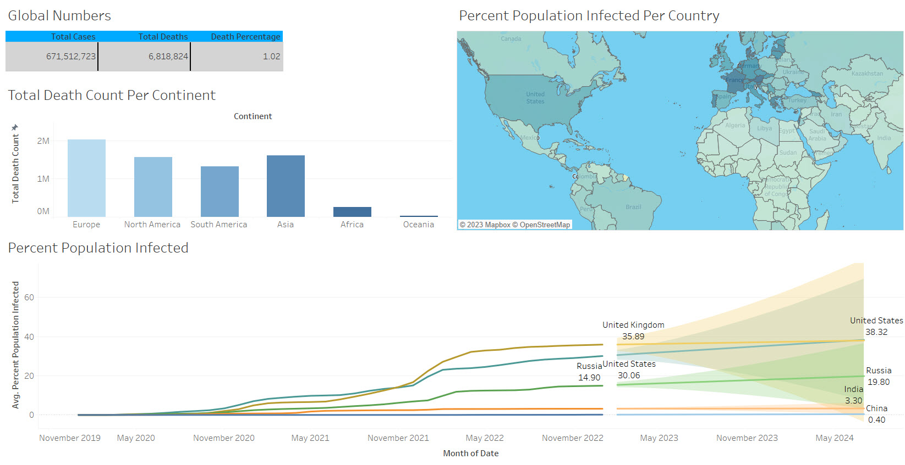

I utilized Python libraries including NumPy, Pandas, Matplotlib, and
PrettyTable in this project. Additionally, I incorporated bar charts, tables,
scatter plots, and heatmaps to analyze the correlation.


Explored COVID-19 data using SQL and Python for cleaning and preparation. Conducted data analysis and extraction on cases, deaths, and vaccinations using SQL's functions, subqueries, and joins.

Developed a Tableau dashboard to visualize COVID-19 data. Utilized SQL to clean and process data, and designed interactive visualizations like maps, line and bar charts to identify patterns and trends.

Utilized Power BI for an HR Analytics project to analyze and visualize HR data. Designed interactive visualizations such as bar charts, line charts, and Matrix to identify employee Attribution rate.
Conducted Titanic data analysis on Kaggle, identifying key factors for passenger survival using EDA, and data visualization, showcasing data-driven decision-making skills. also drawn meaningful insights from complex datasets